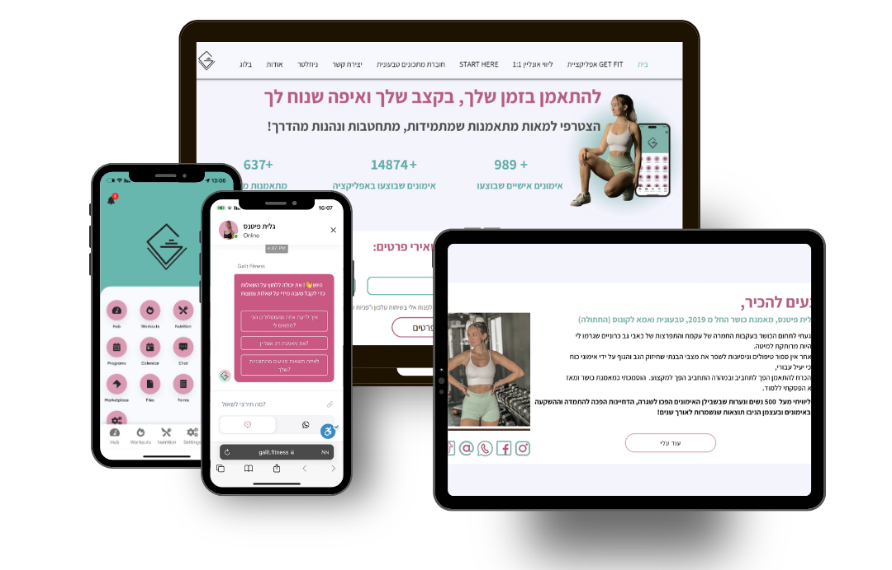

My name is Galit, I used to live in Shlomi and have there my fitness studio, as you might guess, I had to close my studio and became 100% online fitness coach. I've done this course until the war has started but stopped it and doing it again now because I couldn't concentrate on learning while my boyfriend was in the army and disconnected most of time.
But with the skills I've got from the first course I've succeeded to build my own website with Wix Studio! Okay Okay, credit to my BoyFriend for the UI UX design of the website! You can search "Galit Fitness" on google and it will be the first one yay! I took this course because I really love doing everything on my own and building sites is something that always interested me.